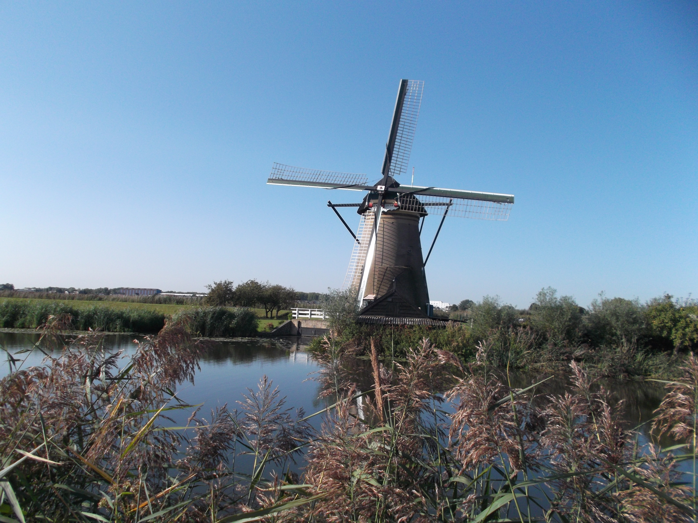
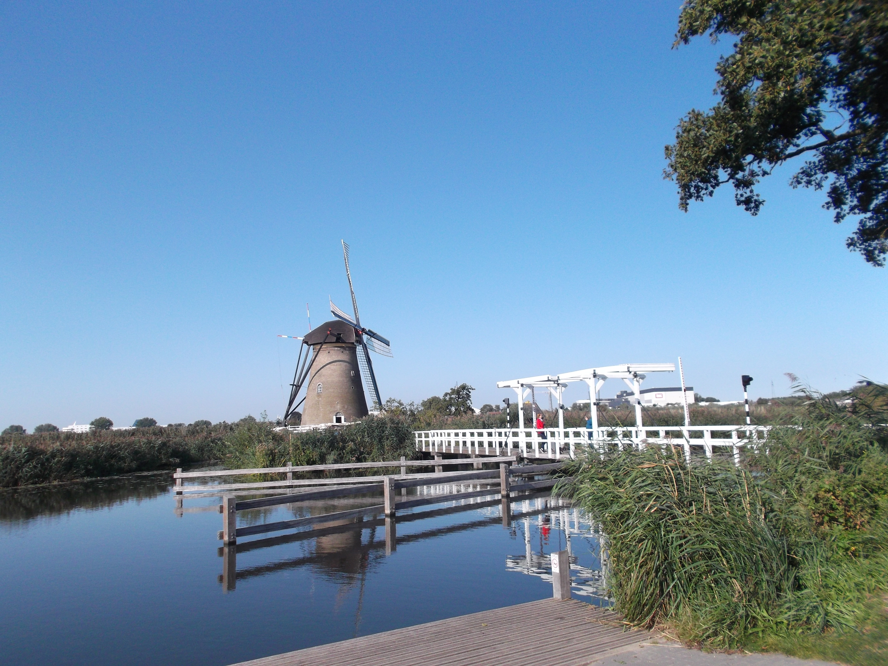
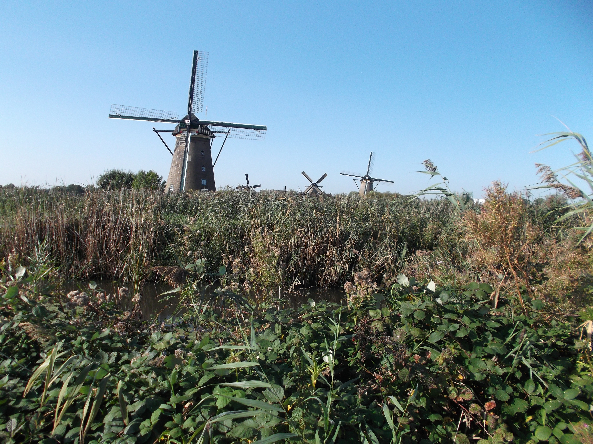
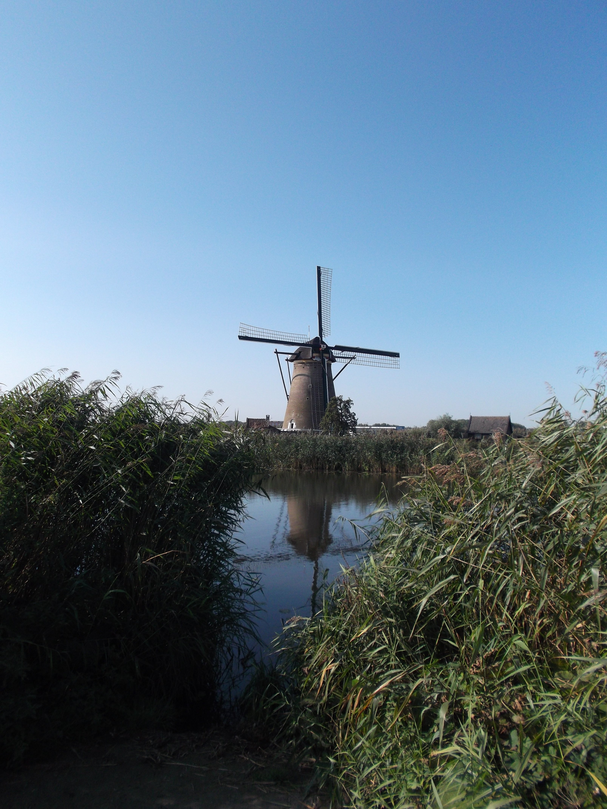
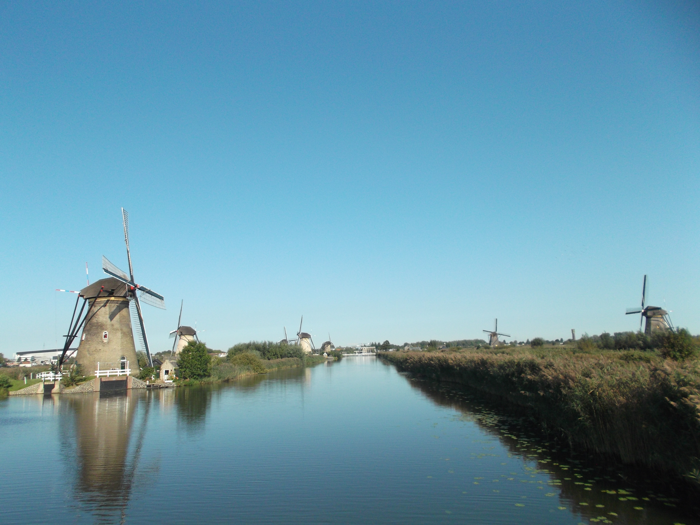
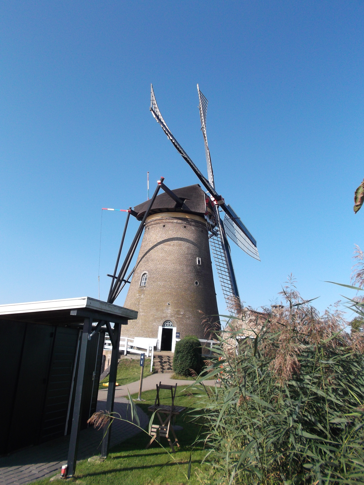
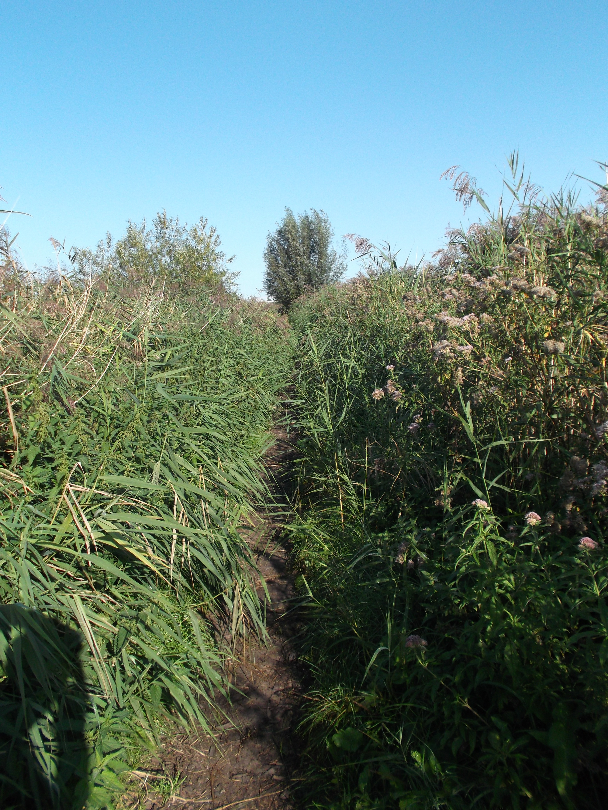
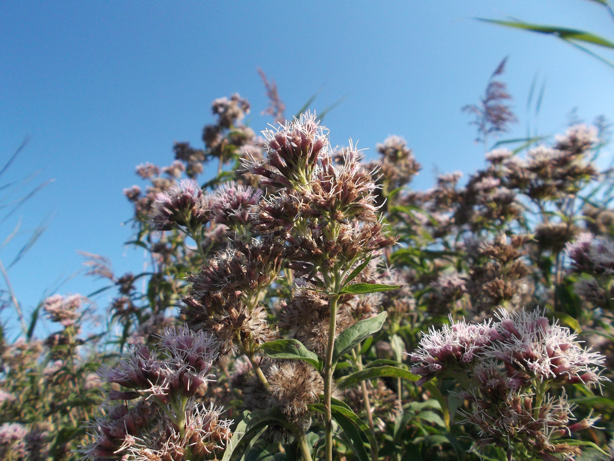
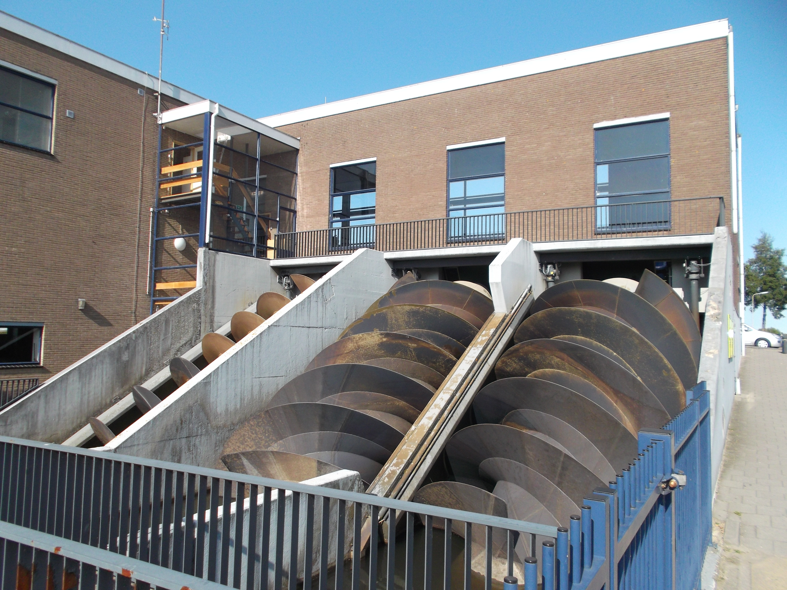

I live in the Netherlands, and one of our most classic tourist attractions is the Kinderijk. It is a small village which contains a very high concentration of windmills. These windmills are an important part of dutch history, since they allowed us to create lots of extra land, called polders. The fun thing about the kinderdijk is that you can admire these majestic machines from up close, and even go inside! I never visited this, so I decided to play tourist in my own country and visit these windmills. Below you can get an impression of how this looked.
     I took a side-track once, which led me through some very high grass and some ... interesting ... flowers.
 When walking back to the car I walked past an enormous machine, which turned out to be a 'gemaal', or pumping station. This is the modern variant of the classic windmill, powered by electricity instead of wind. They are much more powerful and efficient.
As efficient and powerful as they may be, they sure look less classy than the classic windmills.